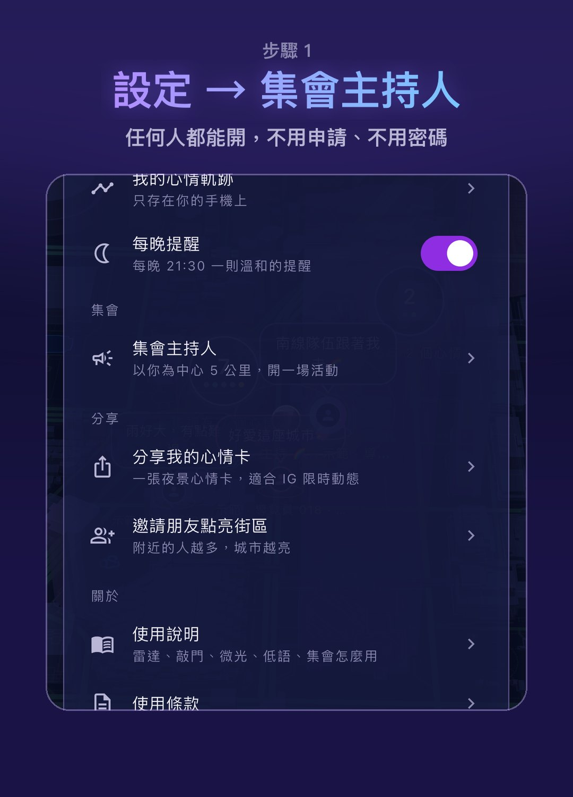
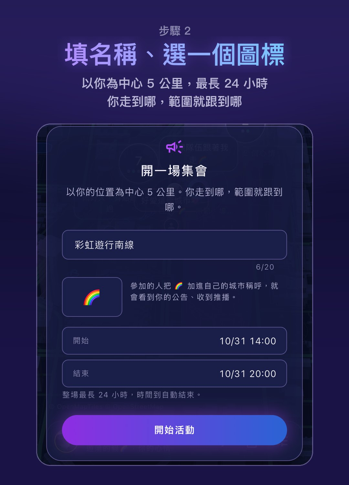
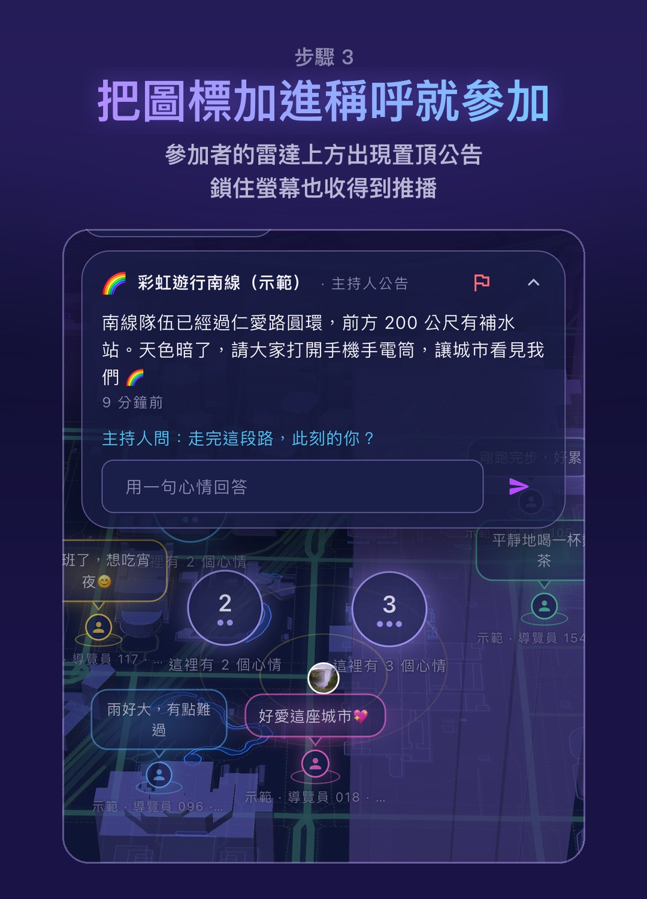
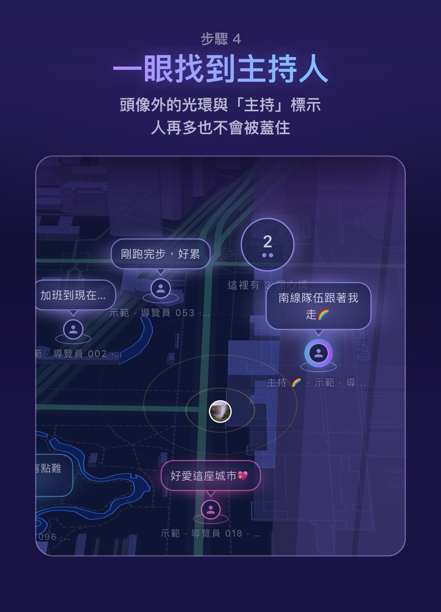
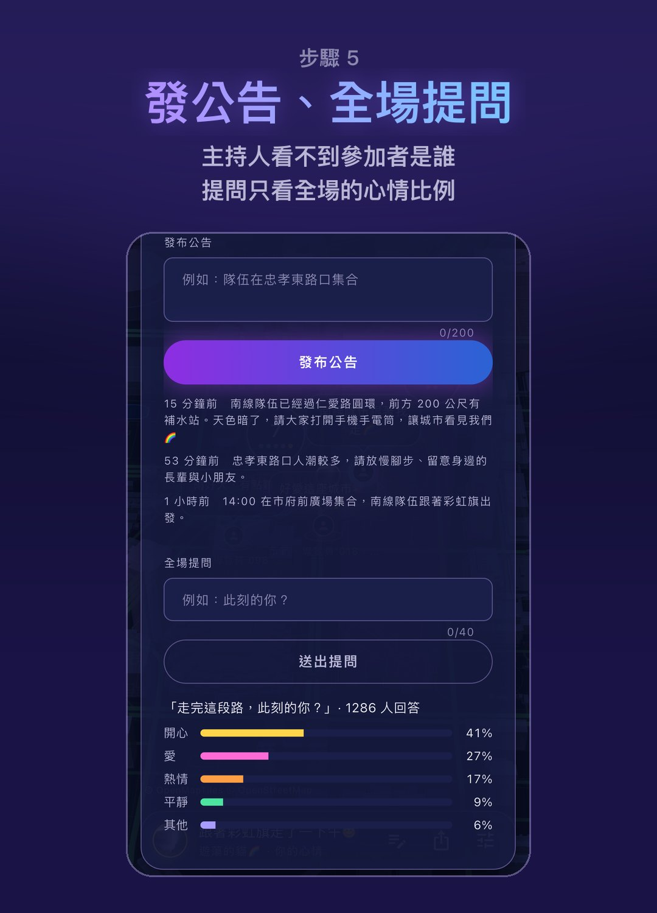
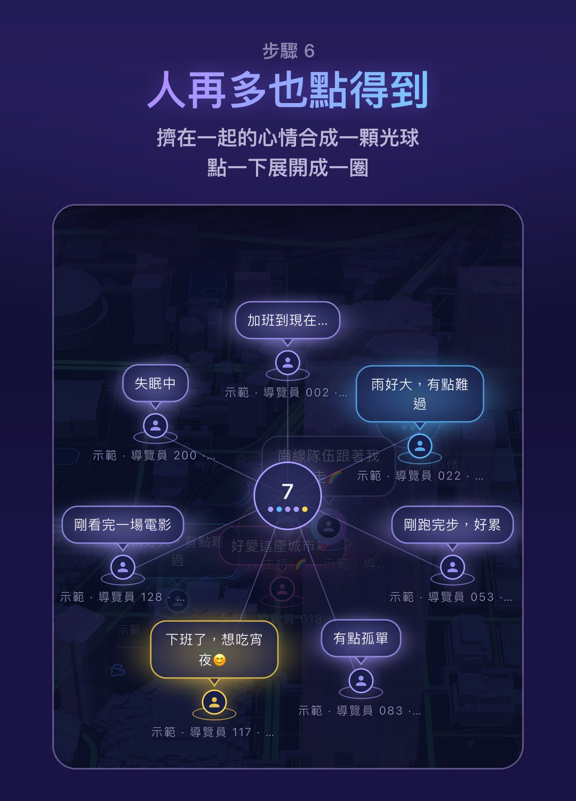

MOOD WHISPER · GATHERINGS
城市低語的「集會」以主持人的手機為中心，涵蓋 5 公里；參加的人只要把活動圖標加進自己的稱呼。公告即時置頂、推播送達，全場提問看得到大家此刻的心情，而主持人永遠看不到參加者是誰。






畫面為示範情境，活動名稱與公告內容僅供說明。
中心點是主持人的手機，遊行隊伍移動時，5 公里的範圍也跟著移動。
把圖標加進稱呼就參加，拿掉就退出；不需要電話、Email 或真名。
主持人看不到參加者是誰。全場提問只呈現比例，少於 10 人回答時連比例都不顯示。
每則公告都能檢舉，但只有在場參加者、且帳號在活動開始前就存在的檢舉才計入；門檻是參加人數的 10%（至少 10 人），只會隱藏那一則公告。整場活動不會因檢舉被自動下架，所有檢舉 24 小時內人工審查。
活動名稱、公告與提問都會經過不當字詞與聯絡方式的過濾。
城市低語只提供工具，不是任何活動的主辦單位，也不代表支持任何團體或政治立場。
城市低語正在公開測試中：iPhone 透過 Apple TestFlight、Android 透過 Google Play 封閉測試安裝。主辦單位想先演練一次，歡迎來信，我們可以協助設定。
報名公測聯絡我們：service.softchip@gmail.com